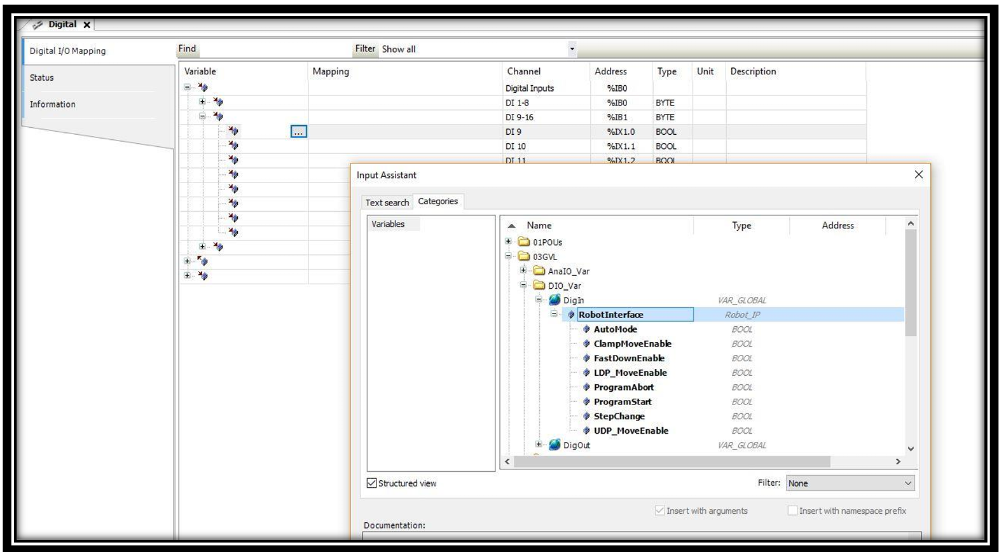

PLC logic implementation
— here comes the chapter from the Robot Interface Implementation.pdf
-
Input / Output Configurations: The above-mentioned Robot Interface signals are mapped in PLC Digital In/Out as shown below:

Figure 1 Digital Input Configuration It may be noted that the NO/NC configuration of Inputs are selected in Parameter page of Robot Interface.
Figure 2 Digital Output Configuration B. Robot Logic:
-
The complete Robot Logic will be active, if the license for “Robot Interface” is activated and then the parameter “Robot Option” is ON in the PLC options page.
-
When the “Robot Option” is selected in the PLC, then the input “Robot Auto Mode” will activate the robot functions. If Laser Safe is connected, then the Bend Guard mute is also activated.
-
If all the axes are homed and “Robot Auto Mode” input is active, a message “Robot mode key is active” will be displayed, then the controller goes to “Stop Mode” and “Start Button” control in the machine is transferred to Robot control of “Program Start” input.
-
The input “UDP_MoveEnable” from the Robot will be used as “Foot Pedal Open” signal in order to reset the errors, move the RAM to UDP under error condition etc., except during “Opening Phase”.
-
The “Press OK” output signal from the NC will be ON, if Homing of all the axes are completed, no errors, Program in Auto mode and “Robot Auto Mode” is active.
-
The “NC Start” output signal from the NC will be ON, if “Program Start” input from Robot controller is ON and the controller goes to “Start Mode” (Green Colour LED is ON in the Panel).
-
During this step, if “Program Start” input from Robot controller is ON, there are 3 possibilities of errors as follows:
-
If program in Semi mode, then there is error message “Machine not in Auto Mode”:
-
If below the UDP position, then there is error message “Move RAM to UDP position”:
-
If start axes is not selected as “TDC External”, then there is error message “Step Change External not selected”:
..
-